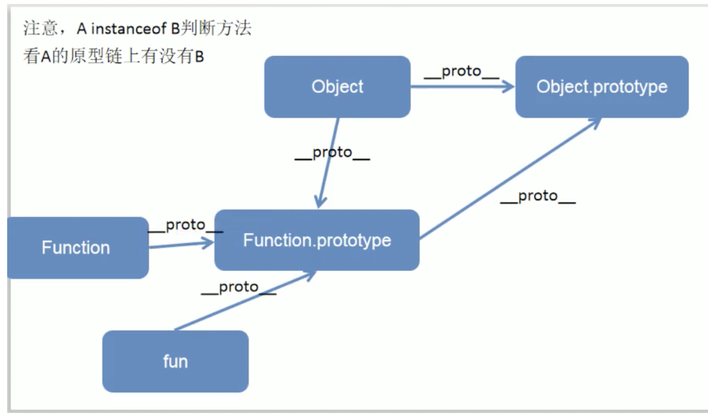
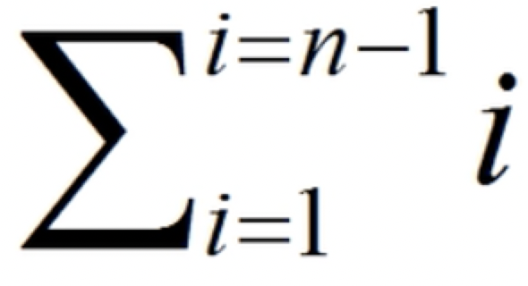
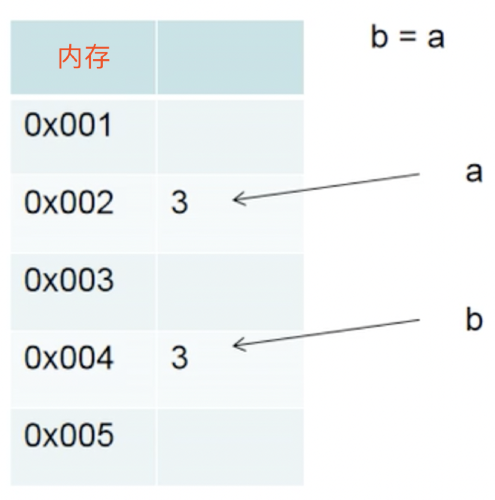
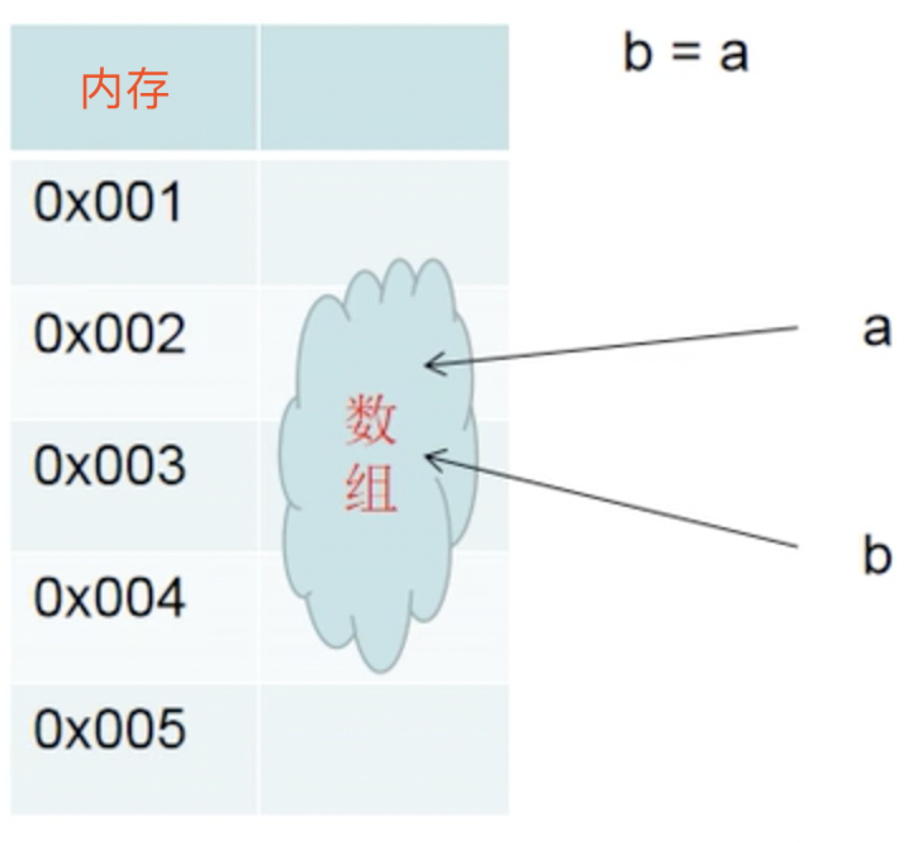

[toc]
复习
一、call和apply
call和apply是用来指定上下文运行函数的
- 我们写了一个函数，比如：
1
2
3function fn(){
...
}
此时如果要运行它，可以直接加圆括号运算符：1
fn()
此时函数的上下文就是window对象。所谓的上下文就是函数中出现的this是谁(此处指DOM开发中，node中的对象无法打印出来)。但很多时候我们需要让函数指定上下文运行，此时就要使用call和apply，它俩功能完全一样！1
2
3
4
5
6
7
8
9
10
11
12
13
14
15
16// 改变某个值
// fn是一个函数，功能是让上下文对象的a属性变为100，但这个函数到底给谁的a属性变为了100，此时不知道，要看函数调用时指定的上下文是谁
function fn(){
this.a = 100;
}
var xiaoming = {
a : 8,
b : 9
}
// 此时想把xiaoming的a值变成100，思路是让xiaoming成为fn的this！
//运行fn函数，同时指定xiaoming对象是fn函数的上下文
fn.call(xiaoming);
console.log(xiaoming); // {a:100,b:9}
// fn.apply(xiaoming);
// console.log(xiaoming); // 结果和call是一样的
示例2：call和apply的区别(只有传参时有区别！ )
1 | // fn是一个函数，功能是让上下文对象的a属性变为传入的两个参数的和 |
示例3：call和apply的函数委托功能 – 假设有两个函数：厨师和服务员，服务员只负责把点的菜告诉厨师，厨师只负责根据传过来的菜单做菜，最初的思路可能是：
1 | function chushi(){ |
所以此时就要应用apply1
2
3
4
5
6
7
8
9
10
11
12function chushi(){
for(var i=0; i<arguments.length; i++){
// arguments是所有传入的是参列表，无视函数传进来多少参数
console.log("我是厨子，我要做" + arguments[i])
}
}
function fuwuyuan(){
chushi.apply(null, arguments); // 因为chushi里面没有出现this所以不需要指定上下文，设置为null就可以了
}
fuwuyuan("宫保鸡丁","鱼香肉丝","地三鲜");
示例4：求和及平均值
1 | function sum(){ |
示例5：求最大值(Math.max)
1 | console.log(Math.max(4,5,6,7,8)); // 当所有的数字是散点式(每个数字用逗号隔开)的时候，可以直接写 |
二、this
- this是什么？
this就是函数的上下文。所以说，==函数的上下文，是除了参数之外的，最常用的使信息进入函数内部的手段==。
- this是谁？怎么判断？
一定要死记：function定义的函数，this是谁，要看如何调用，而不是看如何定义！
判断this的七个规则：
规则1：函数直接用圆括号运行，上下文是window
fn(); 上下文是window
1
2
3
4
5
6
7
8
9
10
11var obj = {
a : 3,
fun : function(){
var a = 5;
return function(){
alert(this.a);
}
}
}
obj.fun()(); // undefined，因为最终调用函数(最后一个括号)的是window，而全局没有a这个变量规则2：对象打点调用函数，上下文是这个对象
obj.fn(); 上下文是obj
1
2
3
4
5
6
7
8
9
10
11var obj = {
a : 3,
fun : (function(){
var a = 5;
return function(){
alert(this.a);
}
})();
}
obj.fun(); // 3，因为最终调用函数(最后一个括号)的是obj规则3：数组(类数组对象)中枚举出函数，上下文是这个数组
arridx; 上下文是arr
1
2
3
4
5
6
7
8
9
10function fn1(fn){
// 类数组对象中枚举出函数然后运行，上下文是这个类数组
arguments[0](3,4);
}
function fn2(){
// 也就是说fn2函数里的this居然是fn1的实际参数列表
alert(this.length);
}
fn1(fn2,5,6,7,8); // 所以弹出5(一共有5个实际参数)规则4：定时器调用函数，上下文是window
- 规则5：被当做了事件处理函数，上下文是触发事件的DOM元素
规则6：用new调用函数，上下文是函数体内秘密创建的空白对象
用new调用函数会经过四步走：
- 秘密创建空对象
- 将this绑定到这个空对象中
- 执行语句
- 返回这个对象
规则7：用apply、call指定上下文
- 面试题举例
第一道
1
2
3
4
5
6
7
8
9
10
11
12
13
14
15
16
17
18
19
20
21
22
23
24
25
26
27
28
29
30
31
32
33function Foo(){
function getName(){
alert(1);
}
return this;
}
Foo.getName = function(){
alert(2);
}
Foo.prototype.getName = function(){
alert(3);
}
var getName = function(){
alert(4);
}
function getName(){
alert(5);
}
// 1
getName();
//2
Foo().getName();
//3
new Foo().getName();
//4
new Foo.getName();
//5
new new Foo().getName();
解题思路：
1）首先排除123，不是4就是5；而函数的声明优先提升，所以先走5，然后提升变量的定义，走4，此时4会将5覆盖掉，所以答案是4
2）Foo()访问的是调用Foo的上下文，因为return的是this(与其内部闭包函数无关)，这里就是window，也就是相当于window.getName()，和1一样弹出4
3）记住new xxx()的优先级是非常高的！(注意是带括号的)一定要先完成new Foo()的部分，然后再去考虑getName()的部分！new Foo()是将第一个函数做了实例化，所以这道题的考点是原型链查找，对象能够沿着原型链，访问自己构造函数prototype上的属性和方法！所以这道题的答案是3
4）如果只是new，则优先级没那么高，所以这道题要先考虑后面Foo.getName()的部分，然后再考虑new！而后面就是一个函数，就相当于用new去调了一下这个函数，所以结果是2
5）优先级问题，首先看new Foo()部分，它返回一个对象Foo，然后这个对象打点调用了getName()，也就是通过原型链调用了自己构造函数的getName方法，最后还是用new调用了一下，相当于用new调普通函数，所以结果还是3
第二道
1 | function getLength(){ |
解题思路：foo()适用于规则1，即被window调用，此时函数foo返回一个自执行函数，也就是说foo()就等同于
1 | { |
foo().info()则符合规则2，即info中的this指的是对象本身，而对象本身的length是
1 | length: function(a,b,c){ |
而这个小函数将被call指定为getLength的上下文传入，所以最终getLength得到的长度是这个小函数的长度，函数的长度为函数的形参列表的长度，小函数的形参列表是(a,b,c)，所以长度为3！(注意：函数的长度是形参列表的长度；arguments.length是函数实参列表的长度！arguments.callee表示函数本身，所以arguments.callee.length表示形参列表的长度！)
第三题
1 | function fun(){ |
第四题
1 | function fun(){} |

第五题
1 | var a = 1; |
第六题
1 | var obj = { |
第七题
1 | var number = 2; |
三、算法类
- 数组的相关算法
数组去重：最简单的方法就是ES6中的Set数据结构。Set说白了就是不能有重复项的数组。用数组来构建Set，数组会自动去重
1 | var arr = [1,1,1,1,2,2,2,2,3,3,3,3]; |
传统方法1
2
3
4
5
6
7
8
9
10
11var arr = [1,1,1,1,2,2,2,2,3,3,3,3];
var _result = [];
function uniq(arr){
for(var i = 0; i < arr.lenght; i++){
if(!_result.includs(arr[i])){ // includs用到的是===，即如果数组中有"1"也会被保留下来
_result.push(arr[i])
}
return _result
}
}
console.log(uniq(arr));
如何看数组的时间复杂度：时间复杂度用o()来表示，n表示数组的长度。那么这个例子中的算法的时间复杂度即为o(n)，表示时间复杂度随着数组长度线性变化
- 数组排序
冒泡排序：5个球进行排序，需要比较4趟，共比较次数4+3+2+1=10次。也就是说，长度为n的数组进行冒泡，共需要比较n-1趟，共比较次
1 | // bubbleSort不是纯函数，不是pure的，因为我们改变了传入到它内部的参数的值 |
纯函数写法：浅克隆
1 | function bubbleSort(arr){ |
快速排序（二分法排序）思路：选择数组的第0项作为标杆，比他大的放一起，小的放一起，然后再用递归分别排两边的数组，直到顺序正确
1 | function quickSort(arr){ |
冒泡排序的时间复杂度是o((n²-n)/2)，快速排序的时间复杂度是o(nlogn)，比冒泡排序快很多
let和var的区别：let表示块级作用域，在for循环中有奇效，它可以自动创建闭包
1 | var arr = []; |
- 递归：面试大致只有6种递归题型：
- 阶乘(n!)
- 数组扁平化
- 深克隆
- 数组的快速排序
- 杨辉三角等数学模型的建立
- 脑筋急转弯，比如不用while、for等输出1、2、3……100
1
2
3
4
5
6
7
8
9
10
11
12
13
14
15
16
17// 数组扁平化
var arr = [[1,2,3],[4,[[[[5,6],7,8]]],9],10];
function flattenArray(arr){
var _arr = [];
// 每一项进行遍历，看看是常数还是数组
for(let i = 0; i < arr.length; i++){
// 数组的识别用isArray，typeof结果是object
if(!Array.isArray(arr[i])){
_arr.push(arr[i]);
}else{
// 如果这项是数组，那么重复这次的遍历模式(递归)
_arr = _arr.concat(flattenArray(arr[i]));
}
}
return _arr;
}
console.log(flattenArray(arr));
拓展功能：想都不要想，一定是用prototype
1 | // 求数组最大值 |
函数的柯里化：函数少穿一个实参就会返回另一个函数，这个函数虚位以待，等待你随时传入最后的参数！假设有一个函数功能是求传入四个参数的和，可如果只传入三个函数，则返回NaN(undefined加任何数都是NaN)，此时为避免这种情况，就需要让函数返回另一个把现有参数先加完，并随时准备接受剩余参数继续相加的函数，这个过程就叫做函数的柯里化(发明此种功能的人叫做柯里curry)
1 | function curry(fn){ |
深浅克隆：首先要区分基本类型值和引用类型值，如下例：
1 | // 基本类型值：在内存中拷贝了一份，所以源数据改变时它不跟着变 |
基本类型值：
- 种类：number、string、boolean、undefined
- 特点：做变量传值的时候，内存中会复制一份。在做==判断或===判断时，仅比较值是否相当

引用类型值： - 种类：function、object、array、regexp、null
- 特点：做变量传值的时候，内存中不会复制。在做==判断或===判断时，要看是否是内存中的同一个对象。

所以有经典面试题1
2
3[] == [] // false
{} == {} // false
[1] == [1] // false
那么如何复制一个数组(对象)呢？
浅克隆：只表层克隆一层，如果数组的某项也是数组，这个内层数组还是内存中的同一对象
1 | var arr = [1,2,3,4,[55,66,77]]; |
关于const：定义常量时，值不能改！但定义对象的话，其属性值可以改
1 | function fn() { |
补充一点关于arguments的知识
1 | function fn(a,b){ |
arguments表示实参类数组对象，它总是能跟着具名形参的变化而变化。当a、b重新赋值的时候，arguments[0]和arguments[1]也就同步更新 了。但是在严格模式下就不会这样：
1 | function fn(a,b){ |
如果函数有默认参数，那么默认参数不算arguments的length。你传入了几个实参，长度就是几。
1 | function fn(a, b=3){ |
同时，当参数有默认值时，改变a和b的值，不会对arguments造成影响，并且不能进入严格模式
1 | function fn(a, b=3){ |